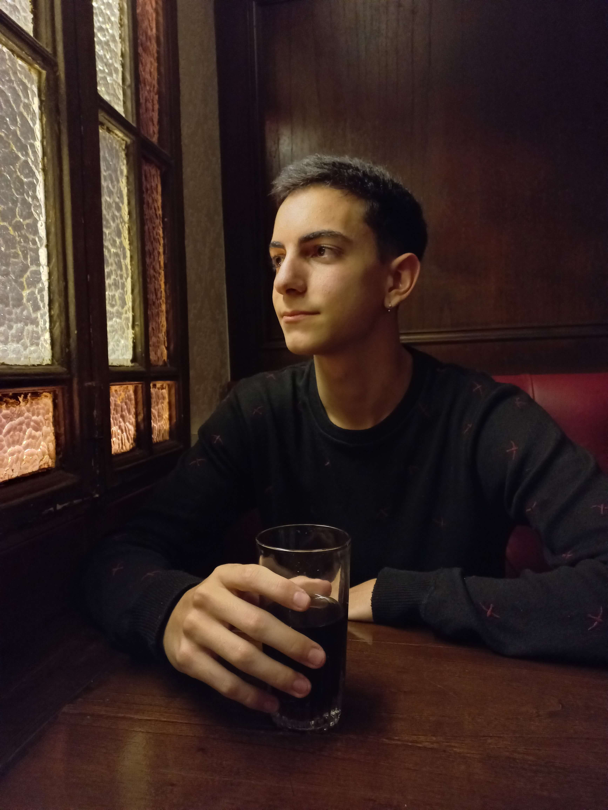

Un poco sobre mi
Hola, mi nombre es Joaquín López, soy Analista de sistemas y Full stack developer. Esta es mi página personal, creada para mostrar mis proyectos y ofrecer mis servicios como programador. Me gradué en Nuestra Señora de la Paz como Analista de Sistemas, y luego como Full Stack Developer en CoderHouse. Siempre estoy queriendo aprender más cosas y desarrollarme como un buen programador, y crecer tanto académica como profesionalmente.
Echá un vistazo a mi sitio web, y en caso de necesitarme, contás con el apartado de contacto. No dudes en hacerlo!
